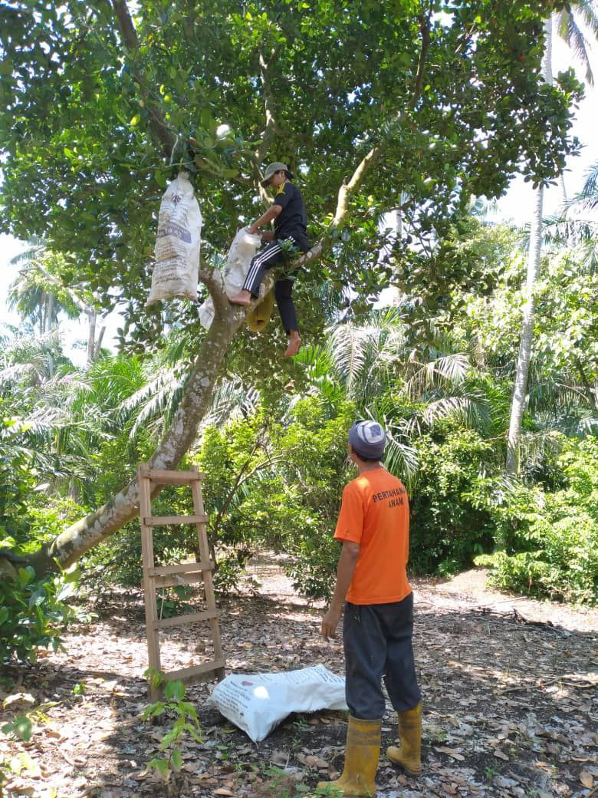
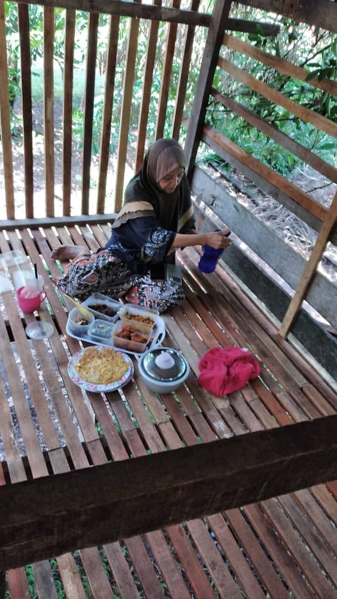
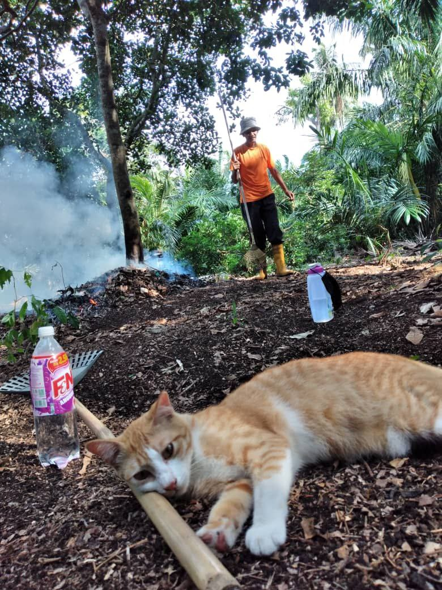

MY LEISURE HOBBIES 🕵️♀️
READING
 |
 |
 |
I really enjoy reading manga and comics, especially those with fantasy, mystery, and strong female characters. Some of my favorites are Mesmerizing Ghost Doctor, I Became the Male Lead’s Adopted Daughter, A Fortune-Telling Princess, and How I Attended an All-Guy’s Mixer. These stories are not only entertaining, but also inspiring and open my imagination to a world full of color and emotion. Reading manga is a way for me to relax, think, and sometimes find new inspiration.
FISHING
 |
 |
 |
Apart from reading manga @ comics, I also have a more relaxed hobby which is fishing with my brother's children at my alley party. This activity is not only fun, but also gives me the opportunity to spend time with my family in a friendly atmosphere. Fishing in the neighborhood makes this hobby even more special because it connects me with the local community, while enjoying the peace and patience that comes from waiting for the catch. For me, fishing is not just a hobby, but also a way to appreciate free time, get closer to nature, and strengthen relationships with the people around me.
GARDENING
|  |
 |
 |
From a young age, my mom and dad taught me gardening, starting with simple activities like watering the flowers in the yard and growing vegetables for daily use. Over time, I began to understand that gardening is not just a hobby, but also a way to get closer to nature, practice patience, and appreciate the results of my own efforts. Gardening gives me peace, especially when I see the planted trees start to grow and bloom. It also becomes a space for me to spend time with my family, share experiences, and learn about the importance of caring for the environment. For me, every seed planted is a symbol of hope and effort that eventually bears fruit.